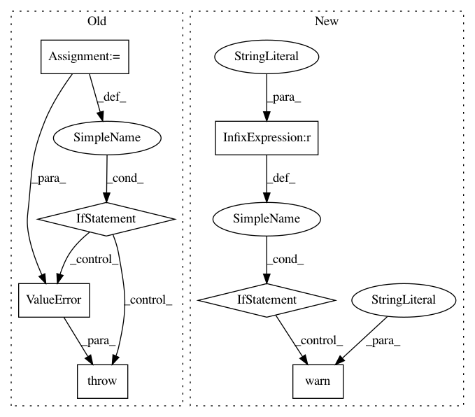

f11d0470e94e33a58f7cb2f996fa1abcaf878f3f,sksurv/tree/tree.py,SurvivalTree,_check_params,#SurvivalTree#Any#,235
Before Change
min_weight_leaf = self.min_weight_fraction_leaf * n_samples
min_impurity_split = 1e-7
allowed_presort = ("auto", True, False)
if self.presort not in allowed_presort:
raise ValueError(""presort" should be in {}. Got {!r} instead."
.format(allowed_presort, self.presort))
presort = True if self.presort == "auto" else self.presort
return {
"max_depth": max_depth,
After Change
min_weight_leaf = self.min_weight_fraction_leaf * n_samples
min_impurity_split = 1e-7
if self.presort != "deprecated":
warnings.warn("The parameter "presort" is deprecated and has no "
"effect. It will be removed in v0.24. You can "
"suppress this warning by not passing any value "
"to the "presort" parameter.", DeprecationWarning)
return {
"max_depth": max_depth,
"max_leaf_nodes": max_leaf_nodes,
"min_samples_leaf": min_samples_leaf,
In pattern: SUPERPATTERN
Frequency: 3
Non-data size: 7
Instances
Project Name: sebp/scikit-survival
Commit Name: f11d0470e94e33a58f7cb2f996fa1abcaf878f3f
Time: 2020-04-10
Author: sebp@k-d-w.org
File Name: sksurv/tree/tree.py
Class Name: SurvivalTree
Method Name: _check_params
Project Name: sebp/scikit-survival
Commit Name: f11d0470e94e33a58f7cb2f996fa1abcaf878f3f
Time: 2020-04-10
Author: sebp@k-d-w.org
File Name: sksurv/ensemble/boosting.py
Class Name: GradientBoostingSurvivalAnalysis
Method Name: _check_params
Project Name: metric-learn/metric-learn
Commit Name: 130cbadff294b686e466d430f26b2d069f6bbf59
Time: 2019-06-07
Author: 31916524+wdevazelhes@users.noreply.github.com
File Name: metric_learn/mlkr.py
Class Name: MLKR
Method Name: fit